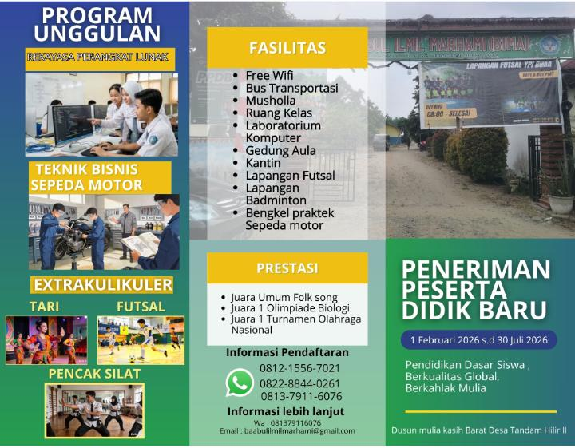
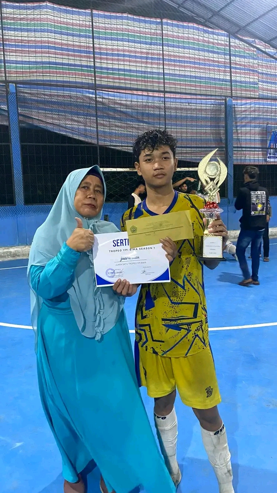
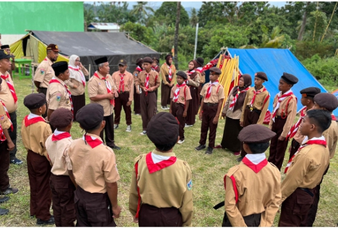
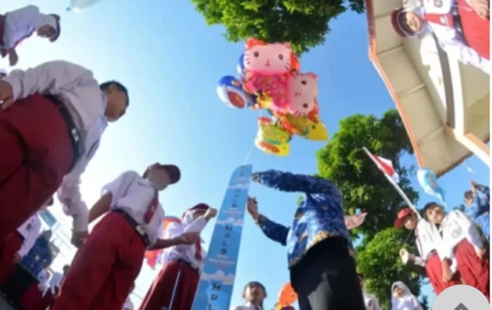
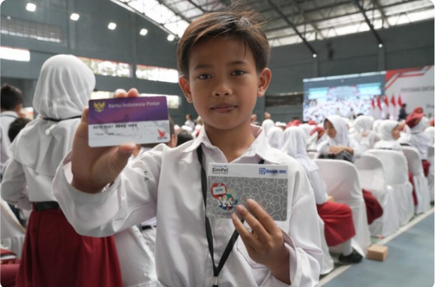

Informasi dan Kegiatan Terbaru SMK BIMA

Pendaftaran peserta didik baru SMK BIMA resmi dibuka untuk tahun ajaran 2026/2027.

Tim SMK BIMA berhasil meraih prestasi membanggakan pada ajang turnamen antar sekolah dan membawa pulang gelar juara.

Pramuka menjadi salah satu kegiatan unggulan yang membentuk karakter, kedisiplinan, dan kepemimpinan siswa.
Penerimaan Peserta Didik Baru (PPDB) SMK Swasta Baabul Ilmil Marhami (BIMA) Tahun Ajaran 2026/2027 resmi dibuka. Sekolah memberikan kesempatan kepada lulusan SMP/MTs untuk bergabung dan mengembangkan potensi akademik maupun keterampilan sesuai bidang keahlian. Proses pendaftaran dilakukan secara terbuka, transparan, dan mudah diakses. Calon peserta didik cukup melengkapi persyaratan administrasi yang telah ditentukan oleh panitia. Dengan tenaga pendidik yang profesional, fasilitas yang memadai, dan berbagai kegiatan pengembangan karakter, SMK BIMA siap mencetak generasi yang berilmu, berakhlak mulia, serta siap menghadapi dunia kerja maupun pendidikan lanjutan. Segera daftarkan diri Anda dan jadilah bagian dari keluarga besar SMK BIMA.
SMK Swasta Baabul Ilmil Marhami (BIMA) kembali menorehkan prestasi yang membanggakan melalui ajang turnamen antar sekolah yang diikuti oleh berbagai peserta dari beberapa sekolah. Dalam kompetisi tersebut, tim SMK BIMA menunjukkan semangat juang yang tinggi, kerja sama yang solid, serta kemampuan yang sangat baik selama pertandingan berlangsung. Sejak babak penyisihan hingga babak final, para siswa tampil percaya diri dan mampu mengalahkan lawan-lawannya dengan hasil yang memuaskan. Berkat kerja keras dan latihan yang disiplin, tim berhasil meraih gelar juara dan mengharumkan nama sekolah. Prestasi ini merupakan bukti bahwa siswa SMK BIMA tidak hanya unggul dalam bidang akademik, tetapi juga mampu bersaing dan berprestasi dalam bidang non-akademik. Kepala sekolah, guru, orang tua, dan seluruh warga sekolah memberikan apresiasi yang tinggi atas pencapaian tersebut. Diharapkan keberhasilan ini dapat menjadi motivasi bagi seluruh siswa untuk terus mengembangkan bakat, meningkatkan kemampuan, dan meraih prestasi yang lebih tinggi di masa mendatang. Selamat kepada seluruh anggota tim yang telah berjuang dengan penuh semangat dan dedikasi. Semoga prestasi ini menjadi awal dari berbagai keberhasilan lainnya untuk SMK BIMA.
Kegiatan Pramuka merupakan salah satu ekstrakurikuler unggulan di SMK Swasta Baabul Ilmil Marhami (BIMA) yang bertujuan untuk membentuk karakter siswa yang disiplin, mandiri, bertanggung jawab, dan memiliki jiwa kepemimpinan. Dalam setiap kegiatan, para anggota Pramuka mendapatkan berbagai materi dan pelatihan seperti baris-berbaris, tali-temali, sandi Pramuka, pertolongan pertama, serta berbagai permainan edukatif yang melatih kerja sama tim. Selain meningkatkan keterampilan, kegiatan Pramuka juga mengajarkan nilai kebersamaan, gotong royong, kepedulian terhadap sesama, serta rasa cinta tanah air yang tinggi. Para siswa mengikuti kegiatan dengan penuh semangat dan antusias. Melalui berbagai latihan dan kegiatan lapangan, peserta didik belajar menghadapi tantangan, menyelesaikan masalah, dan mengambil keputusan dengan baik. Sekolah terus mendukung kegiatan Pramuka sebagai sarana pembentukan karakter generasi muda yang berprestasi, berakhlak mulia, dan siap menghadapi tantangan masa depan. Dengan adanya kegiatan Pramuka, diharapkan seluruh siswa dapat menjadi pribadi yang lebih percaya diri, bertanggung jawab, serta mampu memberikan kontribusi positif bagi lingkungan sekolah maupun masyarakat.

Masa Pengenalan Lingkungan Sekolah menjadi kegiatan awal bagi peserta didik baru untuk mengenal sekolah.

SMK BIMA terus meningkatkan mutu pendidikan melalui berbagai program pembelajaran yang inovatif.